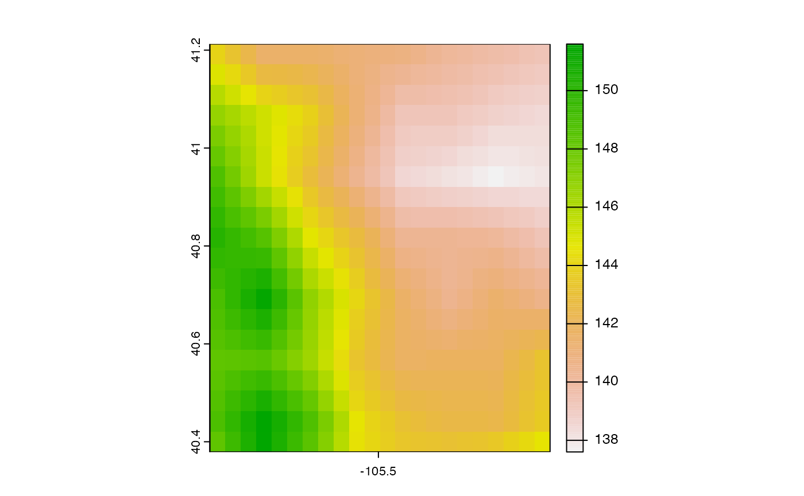
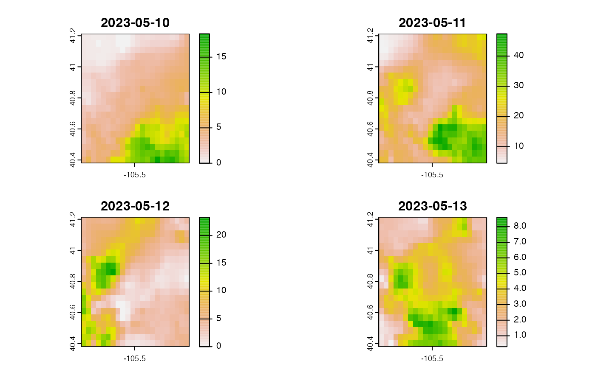
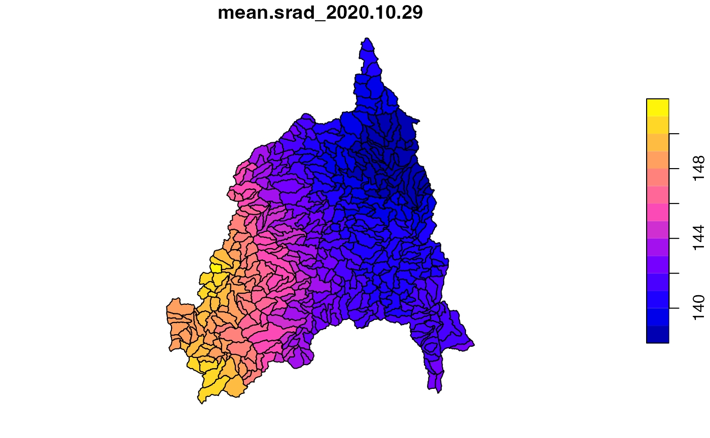
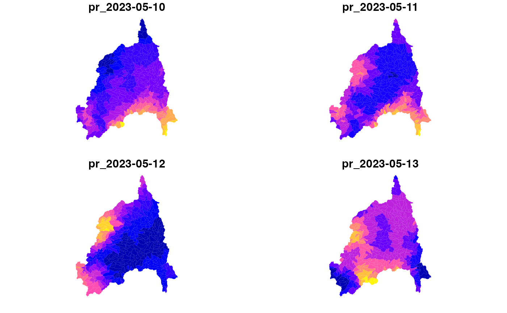
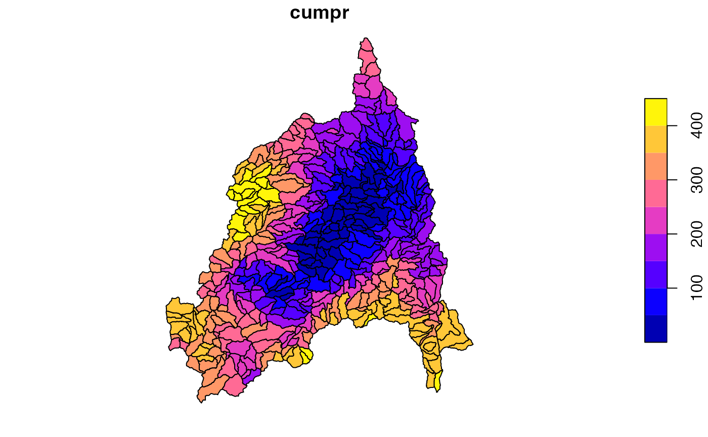
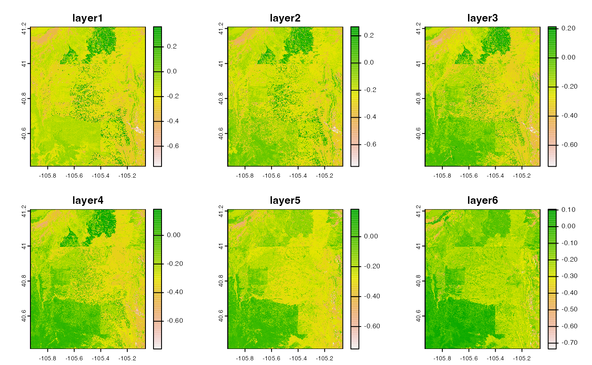
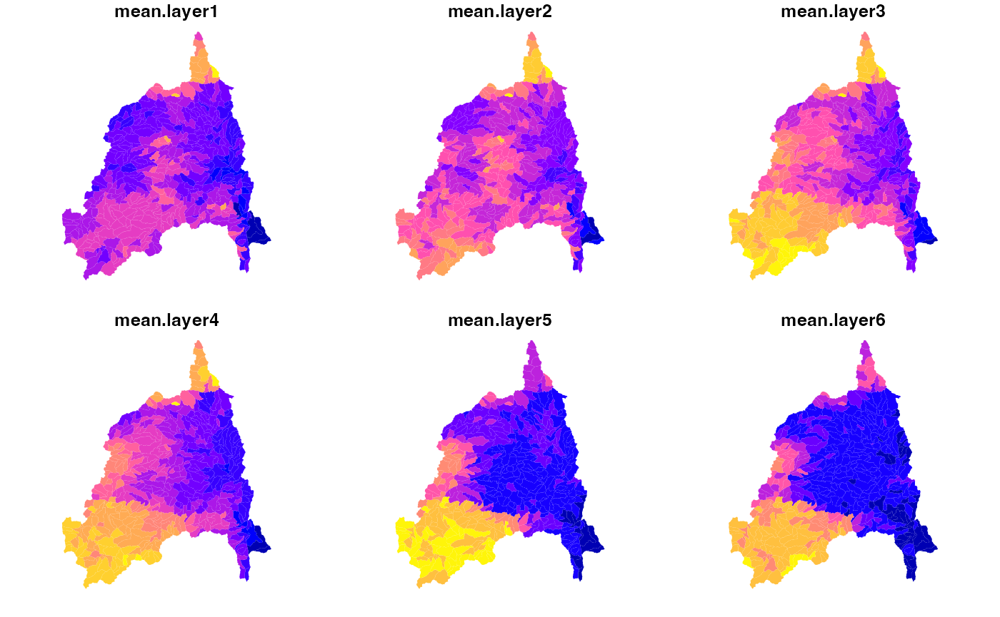
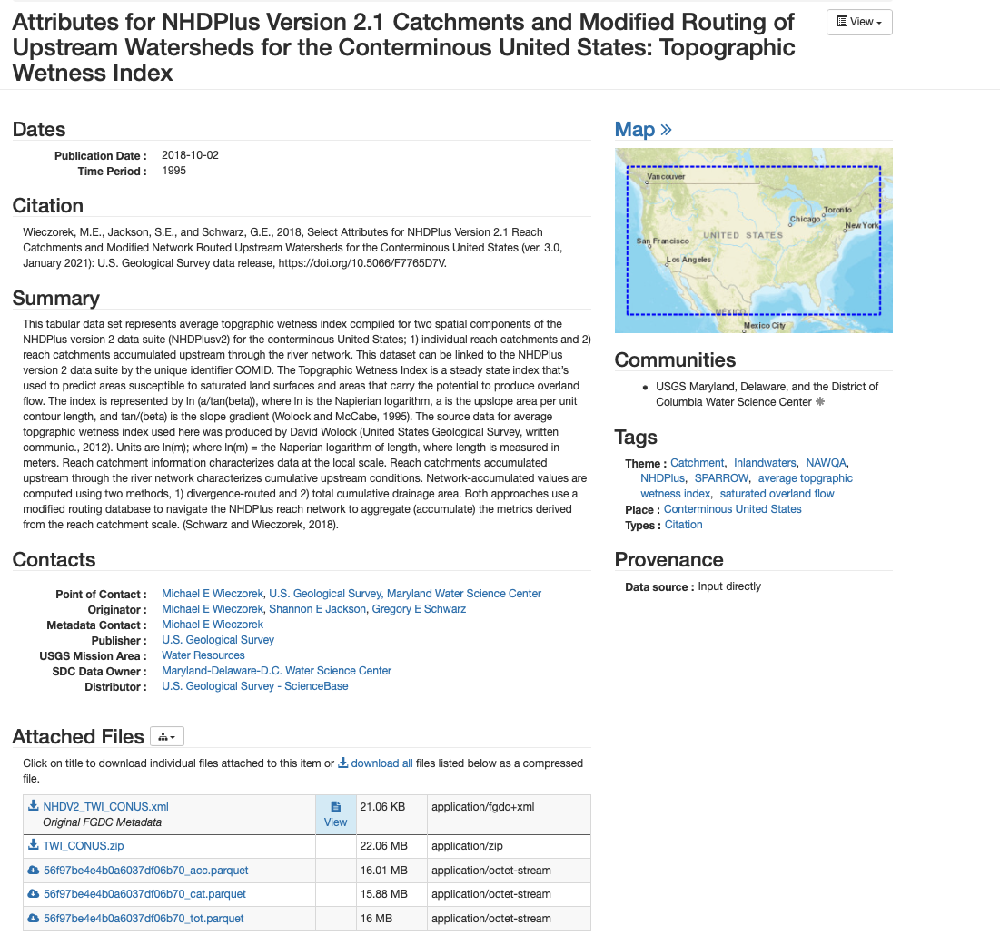
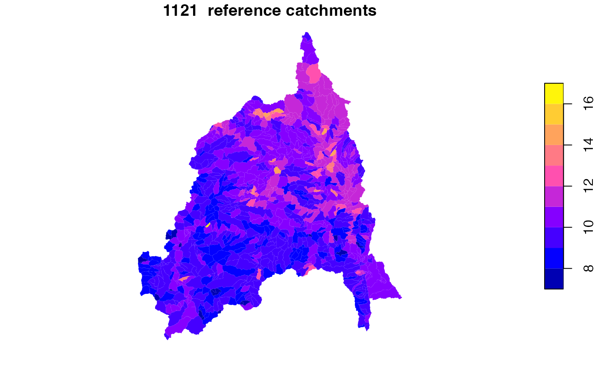
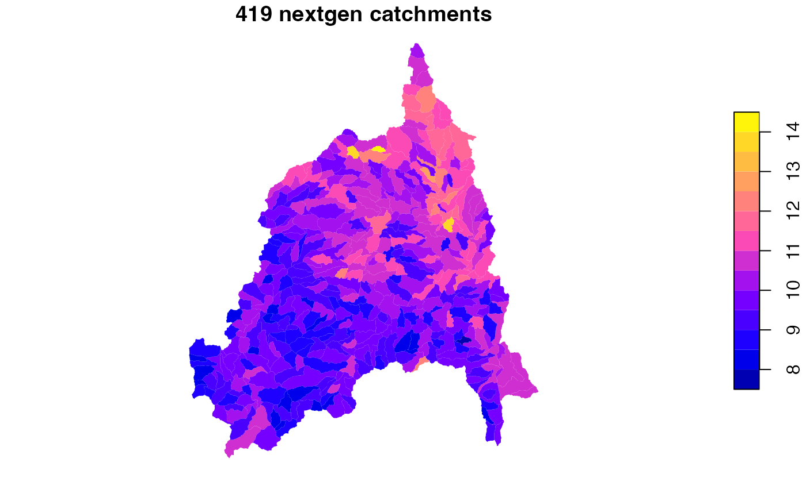

Attribute Access and Creation
Mike Johnson
Lynker, NOAA-AffiliateSource:
vignettes/06-attribute-access.Rmd
06-attribute-access.RmdWe have established how to build a subset hydrofabric product. Now, we are focused on how to add extra information to this data to support modeling and science applications.
We will focus on three high level examples:
- Precomputed data
- Building your own
- Leveraging legacy data
1. Precomputed Data
The intention with NextGen is to provide a suite of precomputed, useful information related to each release of the hydrofabric. To date these include the attributes needed to run CFE/NOAH-OWP, and will eventually include the attributes found in the CAMELS dataset.
Precomputed data with live in the same directory as the released hydrofabric artifacts and will follow the same VPU segmentation.
Here, we can see how to extract information for CFE for our Poudre subset.
Access and Join
divides = read_sf("cihro-data/poudre.gpkg", "divides")
# Open dataset and Join to divides
divides = open_dataset(p) %>%
filter(divide_id %in% divides$divide_id) %>%
collect() %>%
right_join(divides, by = "divide_id") %>%
st_as_sf()Explore
glimpse(divides)## Rows: 419
## Columns: 45
## $ divide_id <chr> "cat-278672", "cat-278673", "cat-278674", …
## $ gw_Coeff <dbl> 0.005, 0.005, 0.005, 0.005, 0.005, 0.005, …
## $ gw_Zmax <dbl> 247.42465, 247.42465, 247.42465, 247.42465…
## $ gw_Expon <dbl> 1, 1, 1, 1, 1, 1, 1, 1, 1, 1, 1, 1, 1, 1, …
## $ `bexp_soil_layers_stag=1` <dbl> 6.905784, 6.905784, 6.905784, 6.905784, 6.…
## $ `bexp_soil_layers_stag=2` <dbl> 6.905784, 6.905784, 6.905784, 6.905784, 6.…
## $ `bexp_soil_layers_stag=3` <dbl> 6.905784, 6.905784, 6.905784, 6.905784, 6.…
## $ `bexp_soil_layers_stag=4` <dbl> 6.905784, 6.905784, 6.905784, 6.905784, 6.…
## $ ISLTYP <int> 3, 3, 3, 3, 3, 3, 3, 3, 3, 3, 3, 3, 3, 3, …
## $ IVGTYP <int> 14, 14, 14, 14, 14, 14, 14, 14, 14, 14, 14…
## $ `dksat_soil_layers_stag=1` <dbl> 1.605749e-07, 1.560944e-07, 2.424650e-07, …
## $ `dksat_soil_layers_stag=2` <dbl> 1.605749e-07, 1.560944e-07, 2.424650e-07, …
## $ `dksat_soil_layers_stag=3` <dbl> 1.605749e-07, 1.560944e-07, 2.424650e-07, …
## $ `dksat_soil_layers_stag=4` <dbl> 1.605749e-07, 1.560944e-07, 2.424650e-07, …
## $ `psisat_soil_layers_stag=1` <dbl> 0.09665685, 0.11262189, 0.16652204, 0.0334…
## $ `psisat_soil_layers_stag=2` <dbl> 0.09665685, 0.11262189, 0.16652204, 0.0334…
## $ `psisat_soil_layers_stag=3` <dbl> 0.09665685, 0.11262189, 0.16652204, 0.0334…
## $ `psisat_soil_layers_stag=4` <dbl> 0.09665685, 0.11262189, 0.16652204, 0.0334…
## $ cwpvt <dbl> 0.09246867, 0.09224170, 0.09224170, 0.0922…
## $ mfsno <dbl> 3.268730, 3.307741, 3.307741, 3.307741, 3.…
## $ mp <dbl> 9.505003, 8.412661, 8.366073, 8.368729, 8.…
## $ `quartz_soil_layers_stag=1` <dbl> 0.6000000, 0.6000000, 0.6000000, 0.6000000…
## $ `quartz_soil_layers_stag=2` <dbl> 0.6000000, 0.6000000, 0.6000000, 0.6000000…
## $ `quartz_soil_layers_stag=3` <dbl> 0.6000000, 0.6000000, 0.6000000, 0.6000000…
## $ `quartz_soil_layers_stag=4` <dbl> 0.6000000, 0.6000000, 0.6000000, 0.6000000…
## $ refkdt <dbl> 3.936352, 3.951302, 3.951302, 3.951302, 3.…
## $ slope <dbl> 0.7555849542, 0.7692162991, 0.7692162991, …
## $ `smcmax_soil_layers_stag=1` <dbl> 0.4457698, 0.4462140, 0.4462140, 0.4462140…
## $ `smcmax_soil_layers_stag=2` <dbl> 0.4457698, 0.4462140, 0.4462140, 0.4462140…
## $ `smcmax_soil_layers_stag=3` <dbl> 0.4457698, 0.4462140, 0.4462140, 0.4462140…
## $ `smcmax_soil_layers_stag=4` <dbl> 0.4457698, 0.4462140, 0.4462140, 0.4462140…
## $ `smcwlt_soil_layers_stag=1` <dbl> 0.04700000, 0.04700000, 0.04700000, 0.0470…
## $ `smcwlt_soil_layers_stag=2` <dbl> 0.04700000, 0.04700000, 0.04700000, 0.0470…
## $ `smcwlt_soil_layers_stag=3` <dbl> 0.04700000, 0.04700000, 0.04700000, 0.0470…
## $ `smcwlt_soil_layers_stag=4` <dbl> 0.04700000, 0.04700000, 0.04700000, 0.0470…
## $ vcmx25 <dbl> 65.49842, 69.17342, 69.32784, 69.31904, 69…
## $ toid <chr> "nex-278673", "nex-278674", "nex-278675", …
## $ type <chr> "network", "network", "network", "network"…
## $ ds_id <dbl> NA, NA, NA, NA, NA, NA, NA, NA, NA, NA, NA…
## $ areasqkm <dbl> 20.081244, 13.325397, 1.141646, 7.440300, …
## $ id <chr> "wb-278672", "wb-278673", "wb-278674", "wb…
## $ lengthkm <dbl> 9.249722, 5.541113, 1.122110, 6.340693, 5.…
## $ tot_drainage_areasqkm <dbl> 20.08124, 51.43679, 87.73334, 186.33094, 2…
## $ has_flowline <int> 1, 1, 1, 1, 1, 1, 1, 1, 1, 1, 1, 1, 1, 1, …
## $ geom <MULTIPOLYGON [m]> MULTIPOLYGON (((-823365 197..…
2. Unique Use Cases
Now, you may not want to use (or be limited) by the data we defined. That is ok too!
As part of the enterprise hydrofabric utilities/aspirations, we provide tools to access over 100,000 different datasets without requiring you to download or find the data!
| Repo | Purpose |
|---|---|
| mikejohnson51/climateR | Tools for for accessing remote data resources for parameter and attributes estimation |
| mikejohnson51/climateR-catalogs | Flat data catalog of virtually accessible resources |
| NOAA-OWP/zonal | Tools for rapid areal summarization |
Gridmet solar radiation on 2020-10-29
Single Day
r = getGridMET(AOI = divides, varname = "srad", startDate = "2020-10-29")
plot(r$daily_mean_shortwave_radiation_at_surface)
srad = execute_zonal(r, geom = divides, fun = "mean", ID = "divide_id")
plot(srad['mean.srad_2020.10.29'])
Through time
p = getGridMET(AOI = divides, varname = "pr", startDate = "2023-05-10", endDate = "2023-05-13")
plot(p$precipitation_amount)
pr = execute_zonal(p, geom = divides, fun = "mean", ID = "divide_id")
plot(pr[grep('pr', names(pr), value = TRUE)], border = FALSE)
On the fly exploration
Here we want rank map the NextGen Catchments by the amount of rain they received over the last few days
pr$cumpr = rank(st_drop_geometry(pr[grep('pr', names(pr), value = TRUE)]) %>% rowSums())
plot(pr['cumpr'])
Beyond Gridmet
climateR provides a range of short cut functions to common datasets. These are simply shortcuts to make access faster:
## [1] "dap_get" "get_data" "get3DEP"
## [4] "getBCCA" "getCHIRPS" "getDaymet"
## [7] "getDodsrcPath" "getGLDAS" "getGridMET"
## [10] "getLCMAP" "getLivneh" "getLivneh_fluxes"
## [13] "getLOCA" "getLOCA_hydro" "getMACA"
## [16] "getMODIS" "getNASADEM" "getNetrcPath"
## [19] "getNLCD" "getNLDAS" "getPRISM"
## [22] "getTerraClim" "getTerraClimNormals" "getVIC"
## [25] "getWorldClim" "go_get_dap_data" "vrt_crop_get"Beyond shortcut functions
The climateR-catalogs provide a vast catalog of resources that can be accessed.
If you can find the catalog element you want, it can be passed to the
more general dap utilities.
glimpse(read_live_catalog())## Rows: 37,010
## Columns: 29
## $ id <fct> bcca, bcca, bcca, bcca, bcca, bcca, bcca, bcca, bcca, bcca…
## $ asset <chr> NA, NA, NA, NA, NA, NA, NA, NA, NA, NA, NA, NA, NA, NA, NA…
## $ URL <chr> "https://cida.usgs.gov/thredds/dodsC/cmip5_bcca/future", "…
## $ type <fct> opendap, opendap, opendap, opendap, opendap, opendap, open…
## $ varname <chr> "BCCA_0-125deg_pr_day_ACCESS1-0_rcp45_r1i1p1", "BCCA_0-125…
## $ variable <fct> pr, pr, pr, pr, pr, pr, pr, pr, pr, pr, pr, pr, pr, pr, pr…
## $ description <chr> "Precipitation", "Precipitation", "Precipitation", "Precip…
## $ units <chr> "mm/d", "mm/d", "mm/d", "mm/d", "mm/d", "mm/d", "mm/d", "m…
## $ model <chr> "ACCESS1-0", "ACCESS1-0", "bcc-csm1-1", "bcc-csm1-1", "bcc…
## $ ensemble <chr> "r1i1p1", "r1i1p1", "r1i1p1", "r1i1p1", "r1i1p1", "r1i1p1"…
## $ scenario <chr> "rcp45", "rcp85", "rcp26", "rcp45", "rcp60", "rcp85", "rcp…
## $ T_name <chr> "time", "time", "time", "time", "time", "time", "time", "t…
## $ duration <chr> "2006-01-01 12:00:00/2100-12-31 12:00:00", "2006-01-01 12:…
## $ interval <chr> "1 days", "1 days", "1 days", "1 days", "1 days", "1 days"…
## $ nT <int> 34698, 34698, 34698, 34698, 34698, 34698, 34698, 34698, 34…
## $ X_name <chr> "longitude", "longitude", "longitude", "longitude", "longi…
## $ Y_name <chr> "latitude", "latitude", "latitude", "latitude", "latitude"…
## $ X1 <dbl> -124.6875, -124.6875, -124.6875, -124.6875, -124.6875, -12…
## $ Xn <dbl> -67.0625, -67.0625, -67.0625, -67.0625, -67.0625, -67.0625…
## $ Y1 <dbl> 25.1875, 25.1875, 25.1875, 25.1875, 25.1875, 25.1875, 25.1…
## $ Yn <dbl> 52.8125, 52.8125, 52.8125, 52.8125, 52.8125, 52.8125, 52.8…
## $ resX <dbl> 0.125, 0.125, 0.125, 0.125, 0.125, 0.125, 0.125, 0.125, 0.…
## $ resY <dbl> 0.125, 0.125, 0.125, 0.125, 0.125, 0.125, 0.125, 0.125, 0.…
## $ ncols <int> 462, 462, 462, 462, 462, 462, 462, 462, 462, 462, 462, 462…
## $ nrows <int> 222, 222, 222, 222, 222, 222, 222, 222, 222, 222, 222, 222…
## $ crs <chr> "+proj=longlat +a=6378137 +f=0.00335281066474748 +pm=0 +no…
## $ toptobottom <lgl> TRUE, TRUE, TRUE, TRUE, TRUE, TRUE, TRUE, TRUE, TRUE, TRUE…
## $ tiled <fct> T, T, T, T, T, T, T, T, T, T, T, T, T, T, T, T, T, T, T, T…
## $ dim_order <fct> TYX, TYX, TYX, TYX, TYX, TYX, TYX, TYX, TYX, TYX, TYX, TYX…POLARIS Soils
cat = filter(catalog, id == "polaris", grepl("mean alpha", variable))
alpha = dap(catalog = cat, AOI = divides)
names(alpha) = paste0("layer", 1:nlyr(alpha))
plot(alpha)
soil = execute_zonal(alpha, geom = divides, fun = "mean", ID = "divide_id")
plot(soil[grepl('mean.layer', names(soil))], border = NA)
USGS DEMs
(cat = catalog %>% filter(asset == "30m CONUS DEM"))## # A tibble: 1 × 29
## id asset URL type varname variable description units model ensemble
## <fct> <chr> <chr> <fct> <chr> <fct> <chr> <chr> <chr> <chr>
## 1 USGS 3DEP 30m C… /vsi… vrt elevat… elevati… 30m CONUS … mete… NA NA
## # ℹ 19 more variables: scenario <chr>, T_name <chr>, duration <chr>,
## # interval <chr>, nT <int>, X_name <chr>, Y_name <chr>, X1 <dbl>, Xn <dbl>,
## # Y1 <dbl>, Yn <dbl>, resX <dbl>, resY <dbl>, ncols <int>, nrows <int>,
## # crs <chr>, toptobottom <lgl>, tiled <fct>, dim_order <fct>
dem = dap(catalog = cat, AOI = divides)
plot(dem[[1]])
Beyond R
The USGS gdptools provides similar climateR/zonal capabilities over the same data catalog in Python
3. Legacy of USGS based COMID data
There is a wide range of legacy and new products produced by the USGS that rigorously summarize 1,000’s of attributes to the NHDPlusV2 catchment network.
One of these that is of particular interest to NextGen is TWI.
While TOPMODEL requires a distribution, a quick and dirty way to get NextGen catchment TWI estimates is of immense value.
knitr::include_graphics("../man/figures/usgs-twi.png")
TWI joined to the Poudre River Network
net = read_sf("cihro-data/poudre.gpkg", "network")
twi = data.frame(comid = unique(net$hf_id)) %>%
left_join(get_vaa('areasqkm'), by = "comid") %>%
left_join(read_parquet('cihro-data/56f97be4e4b0a6037df06b70_tot.parquet'), by = c("comid"="COMID")) %>%
select(hf_id = comid, s_areasqkm = areasqkm, TOT_TWI)Reference fabric data
ref = get_fabric(VPU = "10L", base_s3 = 's3://lynker-spatial/01_reference/', cache_dir = "cihro-data") %>%
read_sf("reference_catchment") %>%
filter(FEATUREID %in% twi$hf_id) %>%
left_join(twi, by = c("FEATUREID"="hf_id"))
plot(ref['TOT_TWI'], border = NA, main = paste(nrow(ref), " reference catchments"))
Area averaging reference fabric to NextGen
full = net %>%
select(divide_id, hf_id, areasqkm) %>%
distinct() %>%
left_join(twi, by = "hf_id")
f1 = aggregate_zones(data = full,
geom = NULL,
crosswalk = select(full, hf_id, divide_id, areasqkm, s_areasqkm),
ID = "divide_id") %>%
right_join(divides,
by = "divide_id") %>%
st_as_sf()
plot(f1['TOT_TWI'], border = NA, main = paste(nrow(f1), "nextgen catchments"))
We are not limited to just TWI. The nhdplusTools package provides a archive of NHDPlusV2 based catchment datasets that can be used:
xx = discover_nldi_characteristics("all")
lapply(xx, nrow)## $local
## [1] 126
##
## $total
## [1] 127
##
## $divergence_routed
## [1] 126
xx$total$characteristic_id[1:10]## [1] "TOT_BFI" "TOT_PET" "TOT_CONTACT" "TOT_EWT"
## [5] "TOT_IEOF" "TOT_RECHG" "TOT_SATOF" "TOT_TWI"
## [9] "TOT_WB5100_ANN" "TOT_FUNGICIDE"Further Lynker provides a reformatted archive of the EPA streamcat data:
xx = aws.s3::get_bucket_df(bucket = 's3://nextgen-hydrofabric', prefix = 'streamcats') %>%
filter(!grepl("old|data", Key))
nrow(xx)## [1] 139
xx$Key[2:11]## [1] "streamcats/streamcat_AgriculturalNitrogen_cat.parquet"
## [2] "streamcats/streamcat_Aquifers_cat.parquet"
## [3] "streamcats/streamcat_BFI_cat.parquet"
## [4] "streamcats/streamcat_CanalDensity_cat.parquet"
## [5] "streamcats/streamcat_CoalMines_cat.parquet"
## [6] "streamcats/streamcat_Dams_cat.parquet"
## [7] "streamcats/streamcat_EPA_FRSRipBuf100_cat.parquet"
## [8] "streamcats/streamcat_EPA_FRS_cat.parquet"
## [9] "streamcats/streamcat_Elevation_cat.parquet"
## [10] "streamcats/streamcat_FirePerimetersRipBuf100_cat.parquet"Summary
NOAA-OWP/hydrofabric provides network subsetting function and preloads a number of software tools critical to the enterprise effort
The reference fabric built on the NHDPlusV2 allows for a minimal, improved network that can be manipulate through refactoring and aggregation to meet the needs of a variety of modeling tasks
NHDPlusV2 is the current, but just only possible reference, however, because of the NHDPlusV2 legacy the data for a Web infrastructure is available.
The NextGen data fabrics are one form of a refactored/aggregated network with extensions for the the modeling application.
For those who “just” want to use the data we have created, a Go based API (that runs hydrofab::subset_network) is available
For those who who want to make there own, all tools are available and open
We also provide the tools to start enhancing the data fabrics with information that helps guide scientific choices, model options, and understanding